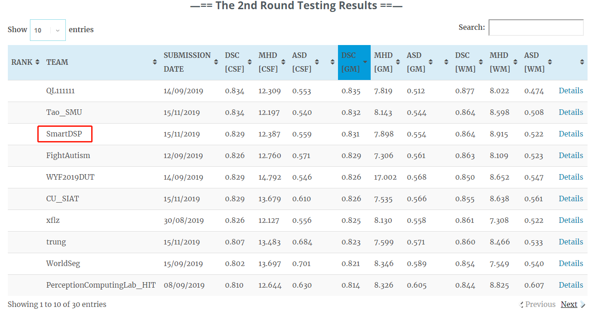

继2018年的MRBrainS18和CPM竞赛之后，我实验室再次在医疗顶会MICCAI的竞赛中取得佳绩。在2019年MICCAI所举办的婴儿脑组织分割比赛iSeg2019上，我实验室取得了综合排名第三名的成绩。

iSeg2019挑战赛的目标为在6个月大的婴儿脑部的核磁共振影像中实现自动的脑组织分割，具体的脑组织类别包括脑灰质（GM）、脑白质（WM）和脑脊液（CSF）。在婴儿大脑的核磁共振影像中，各个组织之间的差异性较小，因此该任务较成人脑组织分割，是一种更为复杂的分割任务。其中，核磁共振的数据包含T1-weighted和T2-weighted两个模态，且比赛中的训练集与测试集的数据分别来自于不同的医学机构，因此如何解决模型在跨域的分割场景中出现的性能下降问题，同样是本次比赛中的一项难点。
为了解决上述难点，本实验的团队在经典的医学图像分割框架nnU-Net的基础上引入了域适应模块，从而在保证模型的分割精度的同时，提升了模型在跨域任务中的分割性能。最终，本实验室的团队在该比赛最后一轮的较量中，从30支队伍中脱颖而出，获得了综合排名第三名的成绩。
SmartDSP参赛队由丁兴号教授带队，黄悦副教授和蔡聪波副教授提供指导，参赛队员为硕士生马文骜和李彦龙。